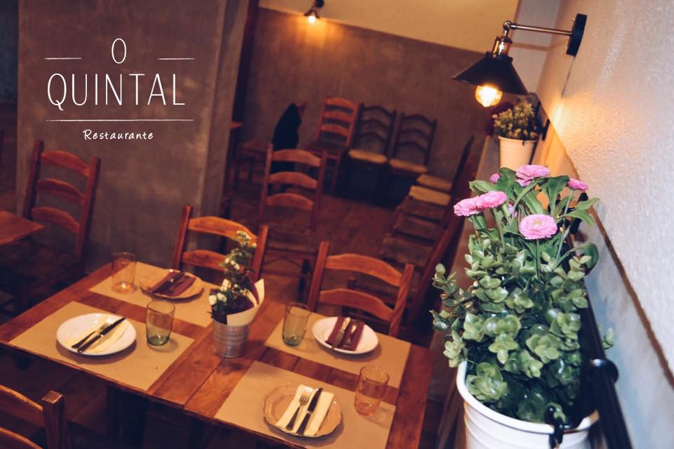

Sabores que aproximam
Bacalhau, petiscos, pratos de carne e peixe. A cozinha portuguesa é o ponto de partida para a nossa mesa.
O QUINTAL / SOBRE NÓS
Na Amadora, há um lugar para comer bem, conversar e voltar. Bem-vindo ao Quintal.

O PRAZER DE RECEBER
O Quintal vive do encontro entre os sabores portugueses e a alegria de os partilhar. Dos petiscos que chegam ao centro da mesa aos pratos que pedem mais uma garfada, cada refeição é um convite a aproveitar o momento.
Aqui, tanto cabe um almoço a dois como um jantar com amigos. O ambiente acolhedor e a variedade da ementa dão espaço a diferentes apetites, ritmos e ocasiões.
Descubra a nossa ementaBacalhau, petiscos, pratos de carne e peixe. A cozinha portuguesa é o ponto de partida para a nossa mesa.
Ovos rotos, estaladiços de alheira, pica-pau e tantos outros sabores. Peça para o centro e descubra em companhia.
Uma sobremesa, um café, mais uma história. Há conversas que merecem prolongar-se à mesa.
A MELHOR PARTE É ESTAR JUNTO